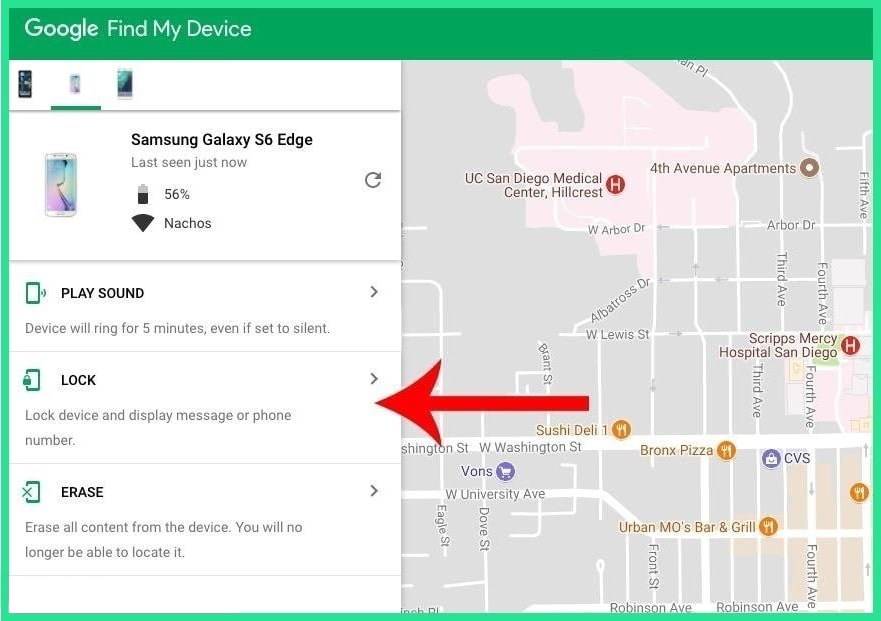

dr.fone - Screen Unlock (Android) is a screen unlock software for removing all kinds of lock screen on your Android device, including pattern, PIN, For most Android phones and tablets, a built-in service called Find My Device is your best bet. As long as you're logged into your Google account, you can use any device or computer to access the service, we've noticed that this method does not work on Android 8.0 or higher. But as long as your phone is running Android 7.1.1 Nougat or lower, it should do the trick. As counterintuitive as it may sound, start by clicking the "Lock" button once Find My Device gets a fix on your phone. If the service is having trouble finding your device, click the refresh button next to your phone's name a few times, and it should make the connection within 5 attempts if your phone is compatible.

After clicking the "Lock" button, you'll be prompted to enter a new password, which will replace the pattern, PIN, or password that you forgot. Type the new password twice to confirm your choice, then click the "Lock" button.
From here, it can take up to 5 minutes for the password to change over, but when it does, you should be able to enter the new password to unlock your device.